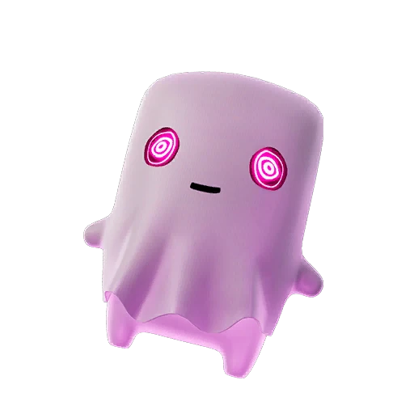

Fortnite Sprite · Epic
Ghost Sprite in Fortnite: Rarity, Ability, Variants and Drop Rates
Cloaks you for a short time after reloading. Find it, extract it, and track every Ghost variant on the FORTNITE SPRITES TRACKER.

- Rarity
- Epic
- Ability
- Cloaks you for a short time after reloading.
- Where to find
- Night-time spawns.
- Summon cost
- 2700 Sprite Dust
- Variants
- 5 released
- Added
- v41.00
| Variant | Drop rate | Bonus | Status |
|---|---|---|---|
| Ghost | 9.00% | Standard ability | Released |
| Gold Ghost | 0.40% | 3× elimination XP | Released |
| Gummy Ghost | 0.30% | +20% Sprite Dust | Released |
| Galaxy Ghost | 0.16% | +30% ammo | Released |
| Holofoil Ghost | 0.0600000% | Squad rare-find chance | Released |
Track your Ghost Sprite collection — mark every variant you own.
Open the FORTNITE SPRITES TRACKER →What Is the Ghost Sprite and How Rare Is It?
The Ghost Sprite is an Epic-rarity collectible that arrived with the v41.00 update, and it quickly became one of the more sought-after companions for stealth-minded players. As an Epic Sprite, it sits in the middle of the rarity ladder: rarer than the Rare-tier elementals like Water and Fire, but more attainable than the Legendary and Mythic Sprites at the very top.
The standard Ghost Sprite appears at a 9% drop rate, which makes it a realistic target for a single focused session rather than a once-in-a-lifetime pull. If you enjoy slipping out of fights unseen and playing the angles, this companion is a natural fit for almost any loadout.
How to Find and Extract the Ghost Sprite
Finding the Ghost Sprite comes down to timing. This companion is tied to night-time spawns, so matches that roll into darkness give you the best window to track one down. Land with the clock in mind, scout the map once the lighting shifts, and prioritise routes where the elusive Sprite is most likely to appear. There is no summon cost listed for it, so you do not need to bank resources before claiming it; the main investment is patience and surviving long enough to lock in your find.
Once you secure a Ghost Sprite, you still have to extract to keep it, so play the back half of the match carefully. Rushing a final fight and dying with an unextracted Ghost Sprite is the most common way collectors lose a good pull.
The Ghost Sprite Ability: Is It Worth Using?
The Ghost Sprite ability cloaks you for a short time after you reload. That single line hides a lot of practical value. Reloading is a moment of vulnerability in almost every gunfight, and this perk turns that weakness into a repositioning tool: tap reload behind cover, vanish briefly, and slide to a flank or break line of sight entirely.
Whether the cloak is worth running really depends on your personal style. Aggressive players who trade in close quarters will get enormous mileage from it, while long-range snipers may prefer a Sprite with a flatter, more constant combat bonus. For most rotational and skirmish-heavy play, though, the Ghost Sprite easily earns its slot.
Every Ghost Sprite Variant, Drop Rate and Bonus
The Ghost Sprite comes in several finishes, and each variant stacks a small gameplay perk on top of the base cloak. The Normal version is the most common at a 9% drop rate and carries the standard ability with no extra bonus. The Gold finish is far scarcer at 0.4% and rewards you with 3x bonus Sprite XP from eliminations, making it the grinder pick. The Gummy Ghost Sprite drops at 0.3% and grants +20% Sprite Dust on extraction, which is excellent for players farming crafting currency.
The Galaxy Ghost Sprite drops at 0.16% and gives +30% more ammo on pickup. The Holofoil Ghost Sprite joined the live pool on July 9, 2026; it drops at 0.06%, and its bonus is a squad chance to find rare Sprites from containers. Note that this Sprite does not currently have a Gem or Rift finish, so the five released themes make up the full set.
Tips and Strategy for Chasing the Ghost Sprite
If the Ghost Sprite is your goal, build your run around the night-time spawn condition rather than fighting it. Choose drop spots that let you survive into the darker phases, and avoid hot landings that end your match before the spawn window even opens. Because there is no summon cost, every match is a completely free attempt, so volume matters: more clean, late-game runs equal more Ghost Sprite chances.
When you do find one, treat extraction as the real objective. For variant hunters, accept that the Gold, Gummy, and Galaxy Ghost Sprite finishes are long-tail pulls; log every attempt so you can watch your luck trend over time. Track your Ghost Sprite collection on our FORTNITE SPRITES TRACKER to see which finishes you still need. The FORTNITE SPRITES TRACKER also makes it easy to compare your progress against the full roster at a glance.
Frequently asked questions
How rare is the Ghost Sprite?
The Ghost Sprite is an Epic-rarity Sprite. The standard version drops at 9%, while the Gold (0.4%), Gummy (0.3%), and Galaxy (0.16%) finishes are progressively rarer.
What does the Ghost Sprite do?
The Ghost Sprite cloaks you for a short time after reloading, letting you reposition or break line of sight right when you would normally be exposed.
Where do you find the Ghost Sprite?
This Sprite is tied to night-time spawns, so aim for matches that run into darkness and survive long enough to locate and extract it. There is no summon cost.